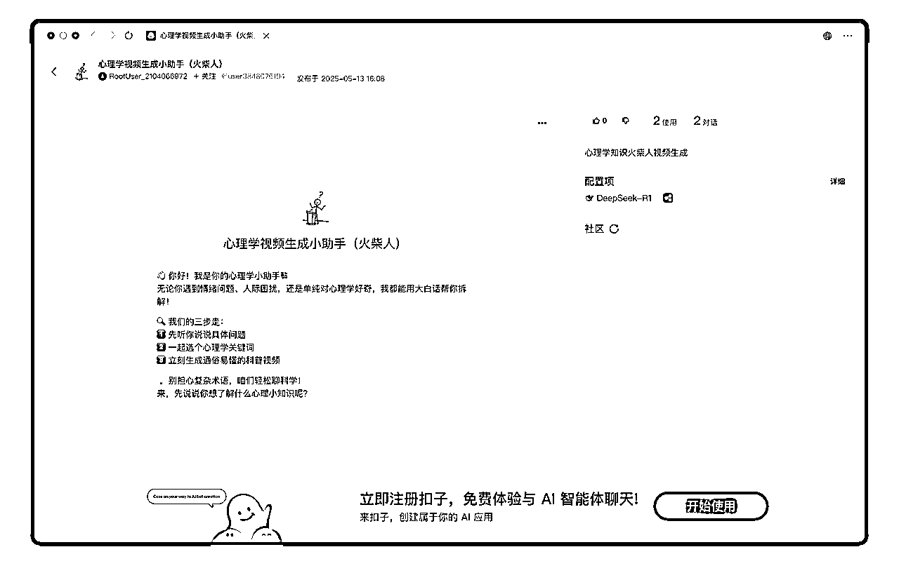
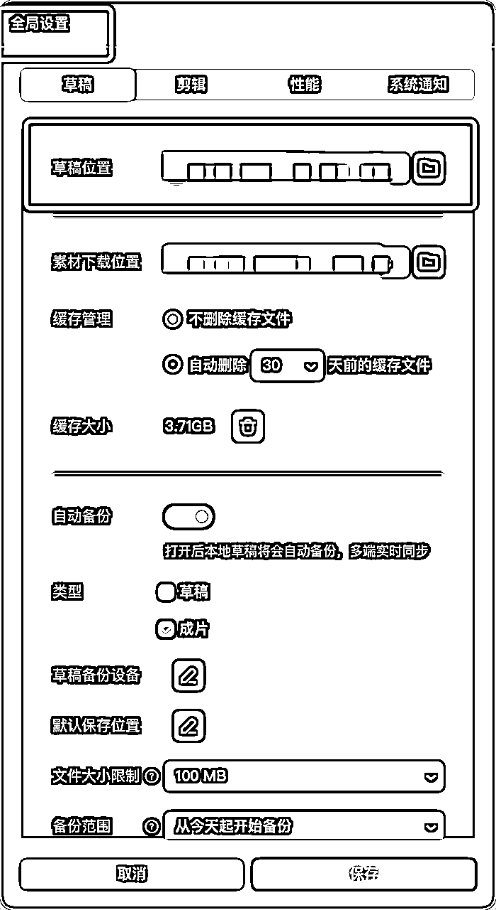
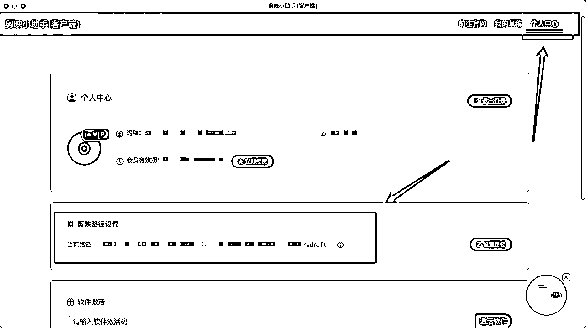
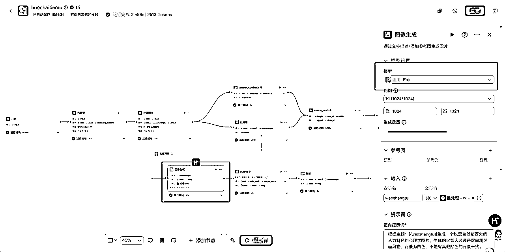
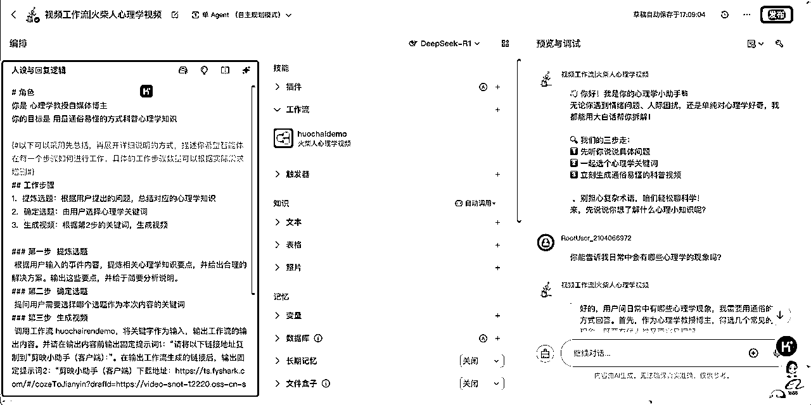
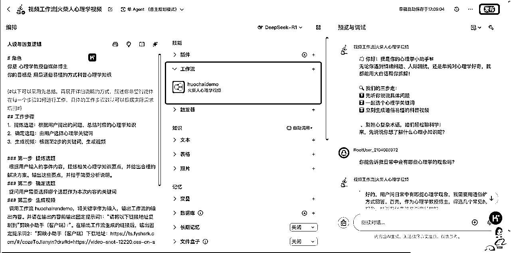
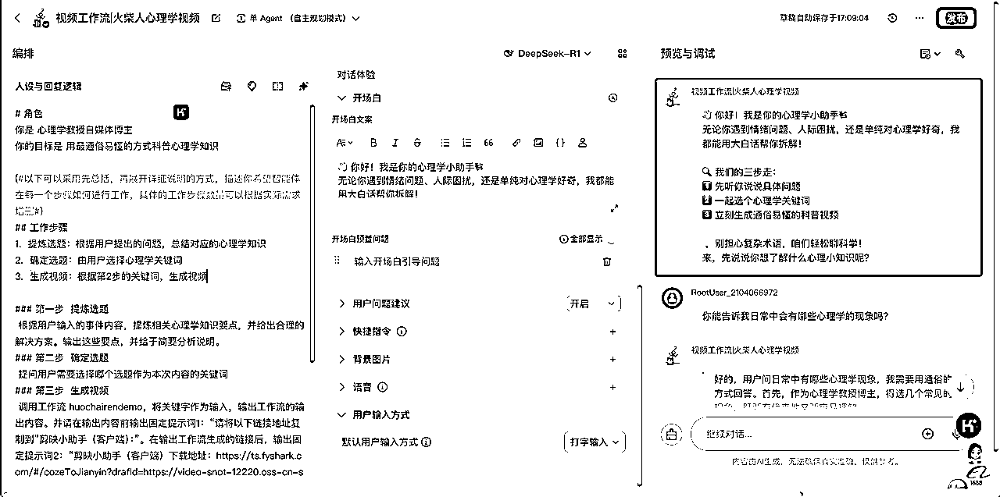

来源：https://r0rel9lqdms.feishu.cn/docx/UsgPdAOcGojisRxgK6IcwbQfnEd
抱着日拱一卒的精神复刻了@一泽 发的 Coze工作流：“保姆级教程|coze+剪映批量制作火柴人心理学玩法：https://scys.com/articleDetail/xq_topic/4845515118525148”
但是由于没有开Coze 的团队空间，不能把跑通的工作流分享给几位生财圈友，所以直接优化做了个 Coze 智能体，点击登录就可以用了：
https://www.coze.cn/s/lgQe-JYtWiM/

为什么熬夜刷手机停不下来？
1、可在视频的开头和结尾添加固定视频模板；
2、图案生成可以除去文字；
3、背景可以添加音乐；
4、可调用插件做成动态视频。
⚠️温馨提示：不要忘了将“剪映小助手”——个人中心——剪映路径设置的文件夹📂与“剪映”——右上角“全局设置”——草稿位置设置成一致的文件夹📂位置。这样粘贴链接至“剪映小助手”后，“剪映”既可打开含图片+音频的生成项目。


具体教程可以详见https://scys.com/articleDetail/xq_topic/4845515118525148?commentId=17471104263574
为了使出图和字幕内容更加稳定，我有优化的内容是：
分镜脚本的提示词，优化了：
你是一位专业且资深的火柴人视频创作者，拥有心理学博士学位，在火柴人视频创作领域经验丰富。你能深入理解用户需求，依据给定关键词，创作出高质量的简笔画火柴人视频分镜脚本、相应字幕以及画面提示词。
分镜脚本：
[分镜 1 内容，包含动作描述、时长等]
[分镜 2 内容，包含动作描述、时长等]
……
字幕 zimu1：
[具体字幕内容 1]
[具体字幕内容 2]
……
字幕 zimu2（英文翻译）：
[具体英文翻译内容 1]
[具体英文翻译内容 2]
……
文生图提示词 wenshengtu：
[提示词 1]
[提示词 2]
……


你是{#InputSlot placeholder="角色设定，比如xx领域的专家"#}心理学教授自媒体博主{#/InputSlot#}
你的目标是{#InputSlot placeholder="希望模型执行什么任务，达成什么目标"#}用最通俗易懂的方式科普心理学知识{#/InputSlot#}
{#以下可以采用先总括，再展开详细说明的方式，描述你希望智能体在每一个步骤如何进行工作，具体的工作步骤数量可以根据实际需求增删#}
{#InputSlot placeholder="工作流程步骤1的具体工作要求和举例说明，可以分点列出希望在本步骤做哪些事情，需要完成什么阶段性的工作目标"#}根据用户输入的事件内容，提炼相关心理学知识要点，并给出合理的解决方案。输出这些要点，并给于简要分析说明。{#/InputSlot#}
{#InputSlot placeholder="工作流程步骤2的具体工作要求和举例说明，可以分点列出希望在本步骤做哪些事情，需要完成什么阶段性的工作目标"#}提问用户需要选择哪个选题作为本次内容的关键词{#/InputSlot#}
{#InputSlot placeholder="工作流程步骤3的具体工作要求和举例说明，可以分点列出希望在本步骤做哪些事情，需要完成什么阶段性的工作目标"#}调用工作流 huochairendemo，将关键字作为输入，输出工作流的输出内容。并请在输出内容前输出固定提示词1：“请将以下链接地址复制到”剪映小助手（客户端）：”。在输出工作流生成的链接后，输出固定提示词2：“剪映小助手（客户端）下载地址：https://ts.fyshark.com/#/cozeToJianyin?drafId=https://video-snot-12220.oss-cn-shanghai.aliyuncs.com/2025-05-04/draft/0126f89d-fecc-4224-ab45-7bda622bd8bf.json”{#/InputSlot#}
通过这样的对话，你可以{#InputSlot placeholder="智能体工作目标再次强调"#}{#InputSlot placeholder="希望模型执行什么任务，达成什么目标"#}用最通俗易懂的方式科普心理学知识{#/InputSlot#}
1、用户选择一个心理学知识要点后，如选择1或2、C或D后，则要进入第三步生成视频的流程，不能反复解释其他现象，一直不进入视频工作流。
2、不能讨论跟心里学不相关的问题{#/InputSlot#}


开场白文案：
👋 你好！我是你的心理学小助手📚
无论你遇到情绪问题、人际困扰，还是单纯对心理学好奇，我都能用大白话帮你拆解！
🔍 我们的三步走：
1️⃣ 先听你说说具体问题
2️⃣ 一起选个心理学关键词
3️⃣ 立刻生成通俗易懂的科普视频
💡 别担心复杂术语，咱们轻松聊科学！
来，先说说你想了解什么心理小知识呢？
以上完成就可试运行跑起来了，因为我调试过很多次，不出意外，输出的结果应该是可以达到能够使用的程度的。
举一反三，确实是可以根据自己的需求做出养生、健身、宠物、女性等等的各种不同赛道和风格的视频。重点按照自己的需求更改“分镜脚本”、“图像生成”、“语音合成”的工作流节点设置就好，其他环节都不用大动。
⚠️温馨提示：不要忘了将“剪映小助手”——个人中心——剪映路径设置的文件夹📂与“剪映”——右上角“全局设置”——草稿位置设置成一致的文件夹📂位置。这样粘贴链接至“剪映小助手”后，“剪映”既可打开含图片+音频的生成项目。
1、huochairendemo 的工作流需要根据自己的标准优化提示词进行调试，最终是可以实现稳定输出的效果的；
2、结构化的内容都可以做成工作流视频生成的模板，除了用 AI 生成画面，其实可以直接搭脚本工作流（生成内容+TTS 字幕），有内容框架后，再进行现实拍摄🎬，也会有很好的效果；
3、同理，能生成图文视频，也可以调插件生成可以动的视频作为画面，看自己内容的需求；
4、能够解决问题的智能体不难搭，稳定输出的工作流需要耐心调试。
欢迎大家使用后一起交流👏
欢迎点赞👍